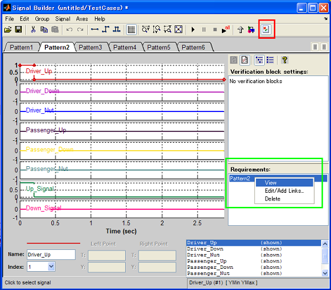

Create SignalBuilder block from Excel selection
- Supported by MATLAB R2007a or later
- Requires Simulink®.
Contents
Overview
(1) Select cells to export SignalBuilder
(2) Click Excel selection to SignalBuilder button
(3) SignalBuilder block is generated (or add / replace)
Rule for writing tests
- Row 1: Write test case name at the left most cell
- Row2: Fill time, signal name 1, signal name 2, ...
- Row3: Fill datatype name for each signals (double, single, int8, uint8, int16, uint16, int32, uint32, boolean)
- Row 4: Fill time and signals at each time.
Note
- If you select "New" at cmtdtool's GUI, the number of outport of SignalBuilder block will be the number of selected column- 1.
- If you select "Add" or "Replace" at cmtdtool's GUI, it cause an error if the number of outport of SignalBuilder block is not equal to the number of selected column -1.
- Currently, Data-type setting s are not reflected to SignalBuilder block. simdata variable which will be created in MATLAB Base workspace after importing data has datatype settings.
Traceability link from SignalBuilder to Excel sheet
If Simulink Verification and Validation license is available on your MATLAB environment, a link from the group in SignalBuilder to originated Excel cell will be created automatically.
To navigate the originated range of the Excel, click "Show verification setting" button (indicated by a red square in the below figure), then right-click on the label name shown in "Requirements" pain and select "View" (indicated by green square in the below figure).

How to run
- Open cmtdtool_sampledata_en.xls in cmtdtool's install directory.
- Select "C2:E15" in "TestVectors" tab.
- Select "New" radio button in cmtdtool GUI, then click "Generate SignalBuilder" button.
- Check that a new Simulink model has been created and the selected time-base signals are exported into SignalBuilder.
- Select "C17:E21" cells in TestVectors tab in the Excel file.
- Click the SignalBuilder block generated by above step 4 to make the block gcb.
- Select "Add" radio button in cmtdtool GUI, then click "Generate SignalBuilder" button again.
- Check that a new signals are added to a new Tab in the SignalBuilder generated by the above step 4.
- Run the following commands and you will see that the same operation can be done by API call.
xls2SignalBuilder('cmtdtool_sampledata_en.xls','TestVectors','C2:E15','','new'); xls2SignalBuilder('cmtdtool_sampledata_en.xls','TestVectors','C17:E21',[bdroot '/TestCases'],'append');